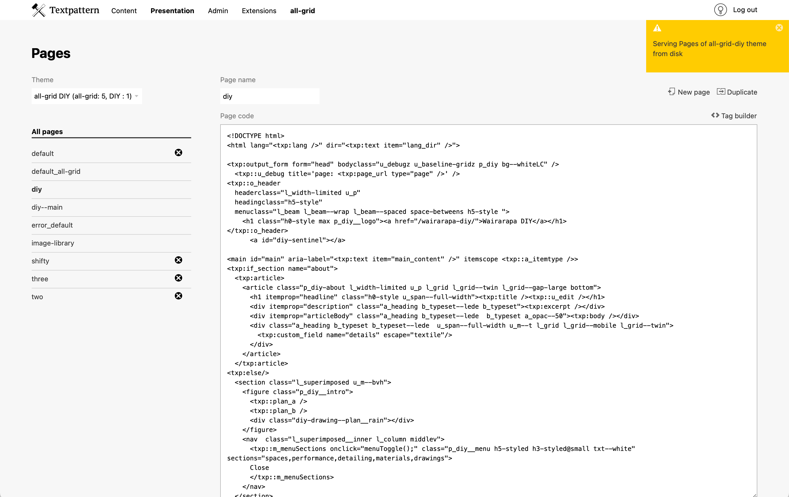
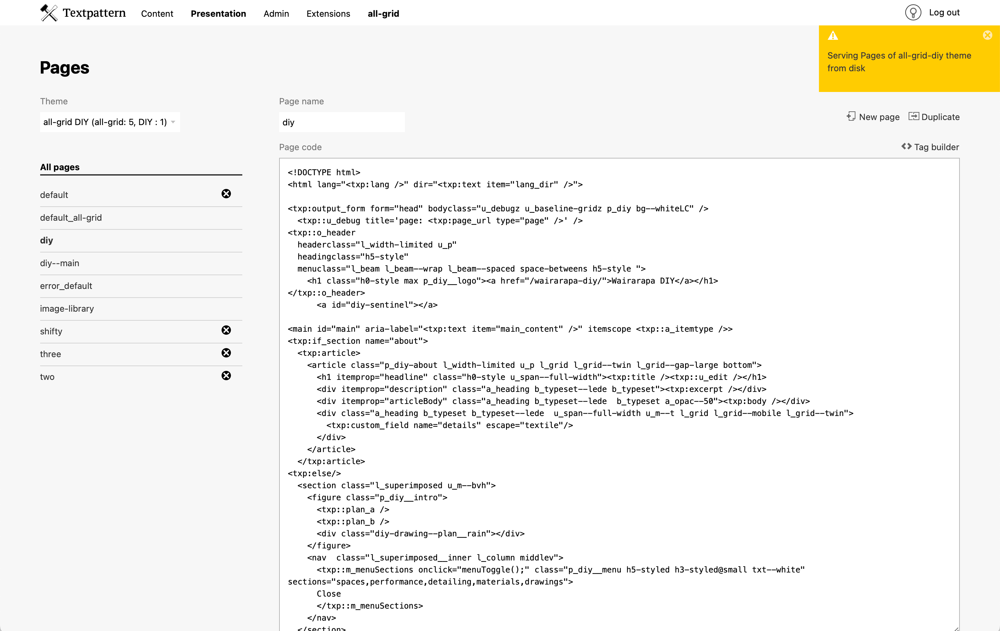

all-admin

A Textpattern admin-theme that rearranges the layout, screen-size permitting:
- Write with a wider, twin-column main area containing:
- Excerpt before
- Multiple textareas (if using glz_custom_fields)
- Custom fields
- Article images
- Images list full width, entries in rows. Thumbnail resizing controls are hidden so users can’t fiddle with the thumbnail sizes. Your preferred thumbnail display height is set via the css.
- Presentation full width textareas
Layout changes are handled via css, with a simple jquery call to alter the DOM. I find this easier (and more reliable) to configure than my prior go-to plugin, Write Tab Customise.
UI
Skinning is simplified, with little decorative styling:
- Calming of the majority of the UI
- Native checkboxes and radio buttons
- Limited icon-usage
- Textpattern yellow is reserved for buttons that trigger (or prepare for) a database change
- Server success/warning/etc messages are less discrete, displayed at top of the viewport
- Mobile layouts tweaked to fit more content
 
